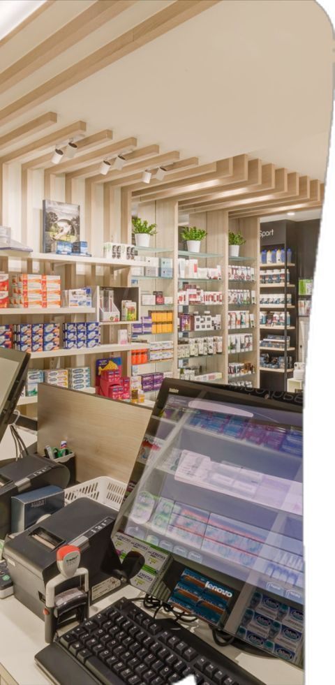
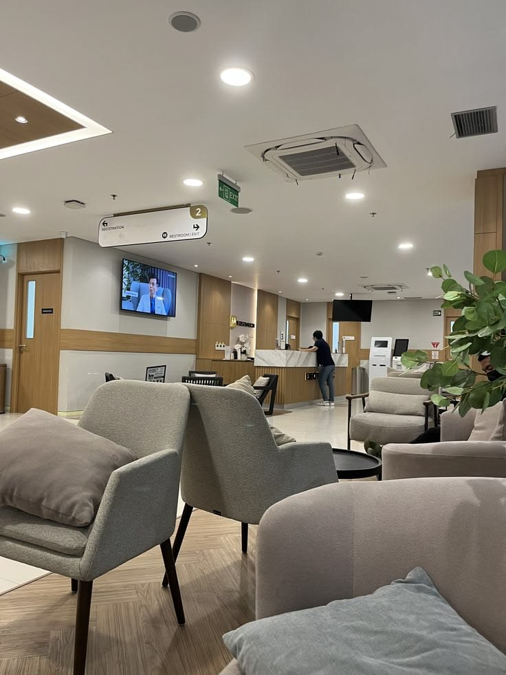

Layanan & Fasilitas Kami
Solusi kesehatan komprehensif, terpercaya, dan profesional untuk Anda dan keluarga.
Poli Umum
Layanan konsultasi kesehatan umum, diagnosis awal, serta penanganan berbagai penyakit ringan hingga sedang oleh dokter berpengalaman.
- Konsultasi Kesehatan
- Pemeriksaan Fisik Dasar
- Pembuatan Surat Keterangan Sehat
- Penanganan Luka Ringan
Poli Gigi
Perawatan kesehatan gigi dan mulut yang komprehensif mulai dari pembersihan hingga tindakan estetika dan operasi kecil.
- Pembersihan Karang Gigi (Scaling)
- Tambal & Cabut Gigi
- Perawatan Saluran Akar
- Pemutihan Gigi (Bleaching)
Poli Anak
Layanan kesehatan khusus bayi dan anak yang ramah dan komprehensif, mulai dari pemeriksaan rutin hingga pemantauan tumbuh kembang.
- Pemeriksaan Kesehatan Anak
- Imunisasi & Vaksinasi
- Konsultasi Tumbuh Kembang
- Penanganan Penyakit Anak
Laboratorium
Fasilitas lab modern untuk menunjang penegakan diagnosis dokter. Hasil yang cepat, tepat, dan dapat dipertanggungjawabkan.
- Cek Darah Rutin & Lengkap
- Tes Gula Darah & Kolesterol
- Pemeriksaan Urine
- Medical Check-Up (MCU)
Fasilitas Penunjang

Instalasi Farmasi (Apotek)
Tersedia apotek yang beroperasi bersamaan dengan jam praktik klinik, menyediakan obat-obatan lengkap, terjamin keasliannya, dan diracik oleh Apoteker bersertifikat. Anda tidak perlu repot menebus resep di luar klinik.

Ruang Tunggu Nyaman
Kenyamanan Anda adalah prioritas kami. Ruang tunggu dilengkapi dengan pendingin ruangan (AC), TV interaktif, air minum gratis, pojok bermain anak, serta Wi-Fi berkecepatan tinggi agar waktu menunggu terasa lebih menyenangkan.